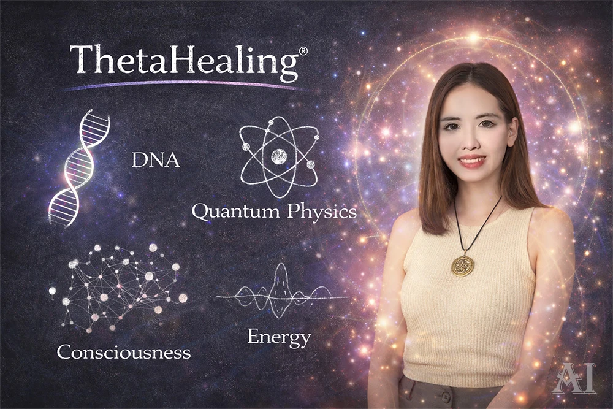
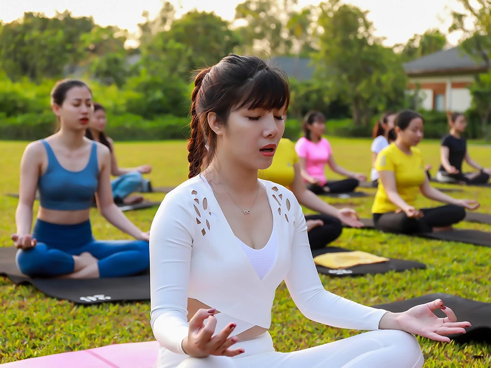

extension希塔療癒（ThetaHealing）
→ 希塔療癒工具
希塔療癒｜ThetaHealing
是一種結合冥想、潛意識探索與能量覺察的身心靈方法，由美國靈性教師 維安娜．斯蒂博(Vianna Stibal) 在 1995 年創立發展而成。這套方法透過冥想讓大腦進入4-7Hz的「Theta腦波」，達到深度放鬆狀態，此狀態被認為是連結潛意識的橋樑。類似催眠效果，讓人能更容易看見自己的信念與情緒模式，進而調整內在的限制性信念。
在課程中，學員通常會學習幾種核心技巧：
- 信念挖掘（Belief Digging）：透過提問方式找出潛意識中深層的限制性信念，並將其替換為正向信念
- 見證轉化（Witnessing）：觀想上七進入造物主的空間，連結「萬有之源（Creator of All That Is）」進行見證與療癒
- 下載感受（Feeling Download）：透過想像與意識練習，下載新的美德、情緒或價值感
這些技巧的目標，是讓人重新看見自己內在的想法、情緒與資料，進而建立和重新找回更適合自己的信念與設定。
在實際練習中，希塔療癒常搭配冥想、直覺練習、能量感知與信念書寫等方式。學員通常會在課堂中互相練習，透過提問與觀察，慢慢理解自己的情緒來源。例如有人可能發現自己對金錢、關係或自我價值有隱藏的限制性信念，透過覺察與轉化，讓內在變得更輕鬆。
這種方法在身心靈學習圈中，被視為一種結合冥想與潛意識探索的自我成長工具，目的是幫助人理解自己的思維模式，並培養更正向的生活態度。
account_balance建安國際教育學院（遇見學院理念）
→ 遇見生命的無限可能
建安國際教育學院（也稱為「遇見學院」）
是一個以自我探索、情緒理解與身心整合學習為核心的成長型學習社群。其理念強調：人一生中最重要的旅程，是「重新遇見自己」。透過課程與交流，人可以更清楚看見自己的情緒模式、價值觀與人生方向。
創辦人為 蔡建安 老師，為現任昌盛國際有限公司的負責人、長坊國際有限公司的執行長、中華全球生命成長協會的創會長，曾擔任25家企業顧問。三十幾年來，秉持著回饋社會的熱誠，義務為生命遭遇困境的人們提供協談服務，至今個案已有超過一萬多位。
在超過兩千場的授課經驗，以及研究與實證多年之後，成功彙整出一套可以幫助一個人奇蹟式轉變的課程：《遇見生命的無限可能》。
在課程設計上，建安學院結合量子力學與靈性科學為基礎，加上簡單易懂的邏輯論述，突破一般人學習與修行上的盲點，尋到真理的共通性，讓大家都可以明白生命的本質。課堂氣氛通常比較互動式，學員透過詢問、實際操作、分享與角色練習來理解自己的想法。
常見的學習工具包括：
- 生命故事書寫：回顧自己的成長經驗
- 情緒覺察練習：觀察當下的感受
- 價值觀探索：理解自己真正重視的事情
- 學院社群分享與回饋：從不同角度看見自己
課程的重點不在於給出標準答案，而是透過提問與交流，讓每個人逐漸理解自己的生命經驗。很多人會在課堂中發現：原來過去的困惑、壓力或情緒，其實都藏著成長的訊息。
建安學院所強調的學習方式，可以理解為一種 「陪伴式成長」。透過課程與社群支持，讓人慢慢建立自我理解與內在穩定感。對許多人而言，這不只是知識學習，更像是一段重新整理人生的過程。

favorite瑟多納釋放法（Sedona Method）
→ 提問釋放法
瑟多納釋放法｜Sedona Method
是一套非常簡單卻深刻的情緒釋放方法，由美國思想家 萊斯特·雷文森 (Lester Levenson) 發展而成。據記載，他在 1950 年代經歷嚴重健康問題後，開始深入觀察自己的情緒與思想，並發現只要學會「放下情緒」，內在就會變得輕鬆與自由。
這套方法的核心概念非常簡單：
情緒不是問題，抓住情緒才是問題。
因此課程的重點，就是學習如何「釋放（Release）」情緒。
在瑟多納釋放法的練習中，最著名的技巧是三個釋放提問：
- 我能不能放下這個感覺？
- 我願不願意放下它？
- 什麼時候放下？
透過這樣簡單的提問，人會開始注意到自己的情緒其實可以被觀察、被接納，然後慢慢放鬆。
課程中常見的工具與技巧包括：
- 情緒覺察：先允許自己感受到情緒
- 釋放提問法：用簡單問題鬆開情緒
- 清理問題（Cleanup Questions）：整理內在衝突
- 持續釋放練習：把方法應用在日常生活
這套方法的特色在於簡單、直接、隨時可練習。很多人會在日常生活中使用，例如在焦慮、壓力或生氣時，透過提問讓情緒慢慢鬆開。長期練習的人常描述，當情緒逐漸被釋放後，內心會變得更輕鬆，也更容易保持清晰與平靜。